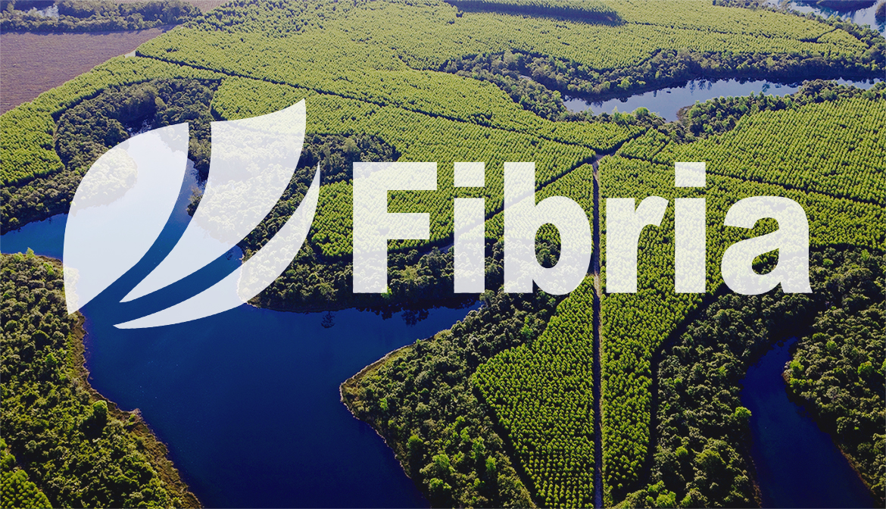

Beneficios del Desarrollo Sustentable
| Aspecto |
Descripcion |
| Reactivar el crecimiento | Principalmente en los casos de los países en desarrollo, donde está la mayor parte de la pobreza del mundo, la satisfacción de las necesidades esenciales y el desarrollo sustentable exigen que haya crecimiento económico. |
| Atender a las necesidades humanas | Esenciales de empleo, alimento, energía, saneamiento del agua son necesidades básicas cuya atención debe ser buscada con prioridad. El empleo se considera la más básica de todas las necesidades. |
| Conservar y mejorar la base de los recursos | Más que un beneficio es señalado como una de las metas del desarrollo, también es comprendido Como una obligación moral de las generaciones presentes en relación a las próximas. |
| Reorientar la tecnología y gerenciar el riesgo | La tecnología es considerada el elemento clave que llevará a la solución de la mayoría de los problemas expuestos debe ser reorientada en función de las exigencias del desarrollo sustentable, que requiere mayor atención a los factores ambientales. |
Syngeta
Syngenta AG es una empresa de negocios en agricultura (agribusiness) con un mercado en las semillas y los pesticidas. Realiza investigación genética y biotecnológica. Es la tercera en el mercado mundial de
venta de semillas agrícolas.
Las ventas del año 2013 fueron aproximadamente de 14,7 miles de millones de dólares. Syngenta tiene unos 28,000 empleados en 90 estados. Más de la mitad de las ventas son de mercados emergentes.
El 8 de mayo de 2015 Syngenta rechaza una oferta no solicitada de adquisición por parte de su competidora Monsanto, considerando que había sido infravalorado el precio de sus acciones.
Con sede en Basilea, Syngenta se formó el 2000 por la fusión de Novartis Agribusiness y Zeneca Agrochemicals. Sus raíces datan del 1758 cuando Johann Rudolf Geigy-Gemuseus de Basilea, comerciaba con productos
químicos de todo tipo. En 1876, los laboratorios Sandoz empezaron el negocio en Basilea, seguidas en 1884 por Ciba.
Estas tres compañías pasaron a formar Novartis en 1995; Ciba-Geigy, formada en 1971, se concentró en la protección de cultivos y Sandoz más en las semillas.
Energia Undimotriz
Las olas del mar no son útiles sólo para los surferos. Con la tecnología adecuada la oscilación de las olas también se puede aprovechar para producir electricidad. Esta energía renovable y, por tanto, no
contaminante se denomina undimotriz y, por el momento, hay pocos proyectos en el mundo que la utilicen.
¿Cómo funciona?
La energía undimotriz es la energía de las olas, a diferencia de la maremotriz que utiliza la subida y bajada de las mareas. Las olas se generan por el efecto del viento sobre la superficie de los mares y los
océanos y, si somos capaces de aprovecharlas, podemos convertirlas en una energía libre de emisiones de CO2.
La agricultura ecológica
La agricultura ecológica, orgánica o biológica es un sistema de cultivo de una explotación agrícola autónoma basada en la utilización
óptima de los recursos naturales, sin emplear productos químicos sintéticos, u organismos genéticamente modificados (OGMs) —ni para abono ni para
combatir las plagas—ni para cultivos, logrando de esta forma obtener alimentos orgánicos a la vez que se conserva la fertilidad de la tierra y se respeta el
medio ambiente. Todo ello de manera sostenible, equilibrada y mantenible.
Los principales objetivos de la agricultura orgánica son la obtención de alimentos saludables, de mayor calidad nutritiva, sin la presencia de sustancias de
síntesis química y obtenidos mediante procedimientos sostenibles.
Fibria
Este gran corporativo con sede en Brasil fue creado en 2009, resultado de la unión de dos de las más grandes empresas de pulpa y papel en el mundo.
En ese momento, Vinicious Nonino, director de estrategia y nuevos negocios, decidió analizar desde otro ángulo los activos de la compañía para transformar su modelo de negocios.
Tomando en cuenta el contexto del mundo y de la industria en específico, incluyendo factores como el avance de la tecnología y el cambio climático, se decidió cambiar el enfoque de
Fibria hacia el desarrollo sustentable urbano, con el objetivo de establecer alianzas para construir desarrollos con valores sostenibles. Ya se han identificado miles de hectáreas
que podrían convertirse en un negocio rentable y de impacto, además de crear comunidades con escuelas, hogares y hospitales sustentables.
Todo esto va de la mano con el crecimiento en las ciudades de Brasil, y el plan también incluye el desarrollo de fuentes de energía renovable, así como bioquímicos,
biocombustibles y bioproductos.
Según el reporte, el caso de esta empresa ilustra que las innovaciones sustentables en los modelos de negocio surgen de un entendimiento prospectivo del panorama empresarial
y de un ajuste del modelo para ser resiliente a los cambios externos.

Reciclaje de Basura Inorganica
La basura inorgánica puede ser reciclada para ser transformada en materiales reutilizables, como por ejemplo, envases, bolsas, botellas, etc.
El reciclaje de basura, puede diferenciarse en seis grandes tipos de reciclaje. El reciclaje de papel y cartón, reciclaje de plásticos, reciclaje de vidrio, reciclaje
de materias peligrosas, reciclaje orgánico, y reciclaje del resto de materiales.
A cada uno de estos tipos de materiales, le corresponde uno de los colores del reciclaje, que puede verse en contenedores y papeleras
Basura biodegradable
La basura biodegradable puede ser reciclada y ser procesada para ser utilizada como abono de plantas. Está compuesta por diferentes materiales de
origen orgánico. Con ella puede fabricarse, por ejemplo, composta, que se usa en agricultura y jardinería.
La basura es un problema con un impacto social y mediombiental muy negativo. Algunos creen que una manera de afrontar el problema es utilizar plásticos biodegradables, en
las bolsas de plástico por ejemplo,
como una solución favorable al medioambiente. A primera vista puede parecer que tiene sentido, pero ¿es realmente más ecológico?

Bosques
Las plantaciones forestales comerciales de árboles de Navidad son una alternativa para producir lo que demanda el mercado nacional sin afectar los bosques naturales,
ontribuyen a mejorar el aprovechamiento sustentable de los recursos, además de que generan empleos e ingresos para el campo.
Los poseedores de esas parcelas llevan a cabo un uso continuo del recurso forestal, pues al momento en que se utiliza un árbol, en la siguiente temporada de lluvia se planta
otro o se utilizan los rebrotes para formar uno nuevo.
Las siembras comerciales de pinos de Navidad son agronegocios que requieren una inversión financiera de largo plazo, debido a las características de crecimiento de las
especies que se utilizan y las prácticas de manejo necesarias para producirlos.
Plantas de energía solar
Las plantas de energía solar aprovechan la luz del sol para producir energía eléctrica. Es un tipo de energía limpia y renovable. La energía solar es aquella que se obtiene de
la radiación solar que llega a la Tierra en forma de luz, calor o rayos ultravioleta. Es un tipo de energía limpia y renovable, pues su fuente, el Sol, es un recurso ilimitado.
Para transformar la energía solar en energía eléctrica, la radiación electromagnética que proviene del Sol es recolectada por distintos medios (colectores térmicos, células
fotovoltaicas, etc.).
Parques de Energia Eolicos
Los parques eólicos son instalaciones de aerogeneradores que utilizan la fuerza del aire para producir energía eléctrica. Son una alternativa limpia para la generación de energía.
Un parque eólico es una agrupación de aerogeneradores que transforman la energía eólica en energía eléctrica.
Estreno mundial: 11 aerogeneradores de 7,5 MW Enercon E126 de viento Estinnes, Bélgica, 10 de octubre 2010.
Parque eólico en el mar (offshore), en Copenhague.
Los parques eólicos se pueden situar en tierra o en el mar (ultramar), siendo los primeros los más habituales, aunque los parques offshore han experimentado un crecimiento importante
en Europa en los últimos años.
El número de aerogeneradores que componen un parque es muy variable, y depende fundamentalmente de la superficie disponible y de las características del viento en el emplazamiento.
Aprovechamiento de agua de lluvia
La recogida y almacenamiento del agua de lluvia es fundamental para evitar el despilfarro de un recurso tan importante como el agua.
Creíamos que el agua no se agotaría nunca. La hemos consumido descontroladamente (se calcula que el consumo medio diario es de unos 300 litros por persona). Hemos crecido, pero el
agua es siempre la misma. Estamos abusando de ella. Europa se encuentra al límite de sus posibilidades, y en España estamos viviendo la terrible experiencia de la restricciones de
agua. Ha llegado el momento de plantearnos un nuevo consumo, más racional, más inteligente, más solidario.
Empresa Sustentable "Starbucks"
Tal vez conoces sobre las iniciativas de RSE de Starbucks relativas al comercio justo, pero poco se sabe
Del esfuerzo que comenzó hace una década para cambiar sus edificios. En un inicio, los líderes de la compañía se vieron renuentes a este cambio, pero el equipo de
responsabilidad decidió mostrarle a cada departamento las ventajas de migrar hacia la arquitectura sustentable.
En 2005, Starbucks abrió su primera tienda con certificación LEED. Enseguida, la empresa vio que no solo existen beneficios ambientales y ahorro de recursos,
sino que también se logra que cada establecimiento tenga aspectos locales, convirtiéndose en un diferenciador.
Actualmente, existen 600 tiendas Starbucks con certificación LEED en 19 países del mundo, incluyendo México, y el compromiso es que a
partir de este 2015 todas las nuevas tiendas contarán con el certificado.
Según el reporte, estos casos demuestran que no solo hay que mirar a nuevas compañías como Uber, sino que las empresas con modelos de negocios
tradicionales también pueden hacer cambios transformadores para tomar un camino más sustentable, que ayudan a posicionarlas para el futuro.
Mexico y el desarrollo sustentable
México es uno de los países más megadiversos del mundo, se estima que en México se encuentra el 12% de la diversidad terrestre del planeta. Ocupa el primer lugar en el mundo
en riqueza de reptiles, el segundo en mamíferos y el cuarto en anfibios y plantas.
El desarrollo económico de los últimos años ha beneficiado enormemente a los mexicanos pero también ha afectado la biodiversidad y al medio ambiente del país. Actualmente la nación
enfrenta un gran desafió, debe continuar con su desarrollo económico y mejorar la calidad de vida de su población a la vez que debe proteger sus riquezas naturales para las futuras
generaciones, es decir, debe lograr un desarrollo sustentable.
Si bien en general los indicadores nos dicen que México está lejos de lograr un desarrollo sustentable existen muchas razones que son ejemplos para pensar que en un futuro
próximo éste se logre.
Deforestacion en Mexico
México cuenta con una superficie cercana a los 2 millones de km² de los cuales el 33% son área forestal y el 10% otras áreas boscosas. De la superficie forestal el 53% es bosque
primario, el 42% son bosques regenerados de forma natural y el 5% bosque plantado.
Son varias las causas de la deforestación en México, la principal es el cambio de uso de la tierra para la agricultura o ganadería, causante del 82% total. Otras causas son la
sobreexplotación de áreas boscosas para la tala (legal e ilegal), la minería, los desarrollos urbanos, los incendios forestales y los desastres naturales.
Es poca la conservación de los bosques en México, solo el 13% (2010) del área forestal del país tiene como función primaria la conservación de la biodiversidad, este porcentaje
es insuficiente y palidece cuando se compara con otros países como Ecuador (49%), Perú (27%), Venezuela (34%) y Estados Unidos (25%).
El área forestal de México como porcentaje del área total ha disminuido lentamente durante los últimos 20 años pasando de 36.2% en 1990 a 33.3% en 2010, a diferencia de algunos
países desarrollados como España y Estado Unidos donde ha crecido. La buena noticia es que la deforestación en el país está disminuyendo hace 20 años se perdían unas 354.000
hectáreas de bosque al año, hace 10 años 235.000 hectáreas y entre 2005 y 2010 se perdieron en promedio 155.000 al año.

Tabla conforme a la deforestación en Mexico y en otros paises

Proyectos del Dearrollo Sustentable en Mexico
Son muchas las iniciativas que han hecho frente al desafío del desarrollo sustentable en México, algunos ejemplos son la construcción ecológica, la protección de bosques
y la descontaminación del aire.
Ejemplos de desarrollo sustentable en México:
Este proyecto cofinanciado por el Fondo para el Medio Ambiente Mundial (GEF por sus siglas en inglés) y CONAFOR en cooperación con Rainforest Alliance, busca crear empresas
forestales comunitarias que contribuyan al desarrollo local mediante la creación de empleos y de bienes comunitarios a la vez que aportan a la conservación de los bosques y la
protección de los servicios ambientales asociados.
¡Échale! a tu Casa
Esta iniciativa de autoproducción y autoconstrucción organizada de vivienda busca ofrecer un hogar digno a las familias de menores recursos a través de la construcción de
viviendas con la participación de la comunidad.
Planea financiar US$25 millones en los próximos años para ayudar a familias de bajos ingresos a construir sus propios hogares ecológicos, equipados con estufas ahorradoras,
biodigestores y sistemas de purificación de agua de lluvia

Esta iniciativa busca mejorar la calidad del aire en la zona metropolitana del Valle de México en el periodo 2011-2020 a través de diferentes estrategias que incluyen
la renovación del transporte público de pasajeros, ampliación del metro, incentivar el uso de bicicletas con ciclo vías, Manejo de áreas verdes, reforestación y Fortalecimiento
institucional e investigación científica entre otros.
Con este plan se espera obtener una reducción de más de 490 mil toneladas en las emisiones de contaminantes, 5 mil toneladas de contaminantes tóxicos y 5 millones 500 mil toneladas
de gases de efecto invernadero. Más PROAIRE 2011-2020

Huella ecologica y biocapacidad en Mexico
En los últimos 50 años la biocapacidad total de México ha descendido constantemente, pasó de 3.5 hectáreas en 1961 a 1.5 en la actualidad, debido a prácticas agrícolas más agresivas
con el medio ambiente, la degradación de ecosistemas y el crecimiento poblacional.
Mientras que la huella ecológica ha crecido de 1.7 hectáreas en 1961 a más de 3 en la actualidad como consecuencia de un mayor consumo de la población. Alrededor de 1980 México pasó
de ser un país con reserva ecológica a uno con déficit.
Impacto ecológico de México con respecto a otros países
La huella ecológica es una medida estandarizada de la demanda humana sobre los ecosistemas de la tierra que representa la cantidad de tierra y zona marítima necesaria para
suministrar los recursos que una población consume y disponer sus desechos. La biocapacidad total es la capacidad de un área específica, biológicamente productiva, de generar un
abastecimiento regular de recursos renovables.
México tiene una huella ecológica de 3 hectáreas per cápita mientras que su biocapacidad total es de 1.5 hectáreas lo que deja a México con un déficit de 1.5 hectáreas.
Cuando se compara a México con otros países de Latino América con un desarrollo económico comparable se encuentra que tiene una huella ecológica similar a la de estos pero su
biocapacidad total es menor lo que causa que tenga un mayor déficit ecológico
Formulario
1.- ¿Que Te gusto de la pagina
2.- Seleccione Seccion Favorita:
3.- Menciona que te gustaria agregar a la pagina
4.- La pagina es amigable:
Si
No
5.-Tienes algun plan de Dearrollo Sustentable
6.-Puede tu idea ayudar a tu coloni o entidad Federativa:
Si
No
7.- Cuentas con el capital suficiente:
Si
No
8.-La pagina tuvo alguna falla al cargar:
Si
No
10.- Descibe el Error y lo solucionaremos
Deja tu comentario